cmdoc is a tool for generating HTML documentation with hyperlinked source code for a Cmajor solution. The source code can be linked with the system library documentation.
In this tutorial we go through creating a simple example program and some documentation for it. The documentation can be created with any text editor that can save the text with UTF-8 encoding. In this tutorial we use Windows notepad.
Create a new Cmajor console application project under the C:\cmajor\projects folder. We create also a new solution for it, because cmdoc operates with solutions.
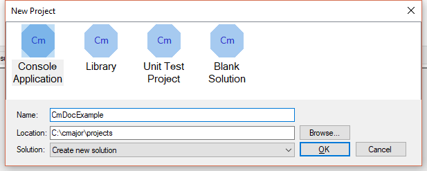Add a new source file to it:
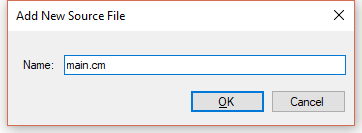Create some source code, compile and save the project:
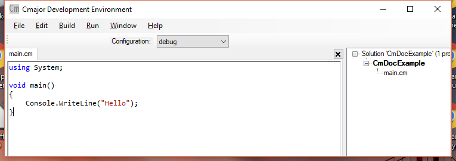Create a new folder named CmDocExample for the project documentation under the C:\cmajor\doc\projects folder, open a command prompt to that folder and create an XML file for the project with name CmDocExample.cmdoc.xml:
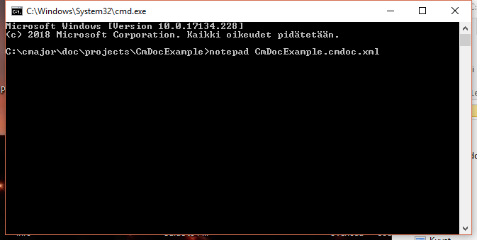Create a cmdoc element to the XML file, and under it a solution element with a filePath attribute that points to the CmDocExample.cms solution file. Create also a target element with a dir attribute that points to the current directory. The documentation will be generated to the target directory. Finally create a libraries/library element with a dir attribute that points to the C:\cmajor\doc\system directory. This links the generated documentation with the system library documentation.
So the contents of the XML file is as follows:
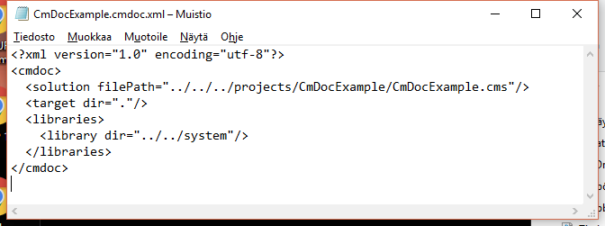Run command cmdoc --verbose CmDocExample.cmdoc.xml from the C:\cmajor\doc\projects\CmDocExample directory:
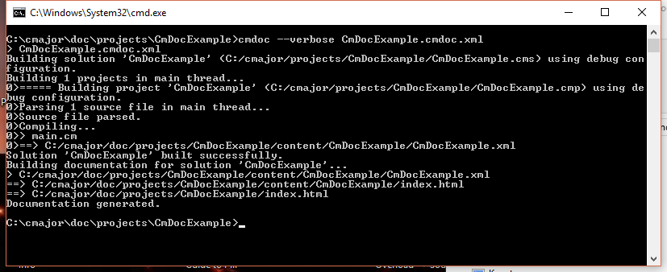The cmdoc program creates two directories: content and style, an index.html file that is the root HTML documentation file and some XML files to the target directory:
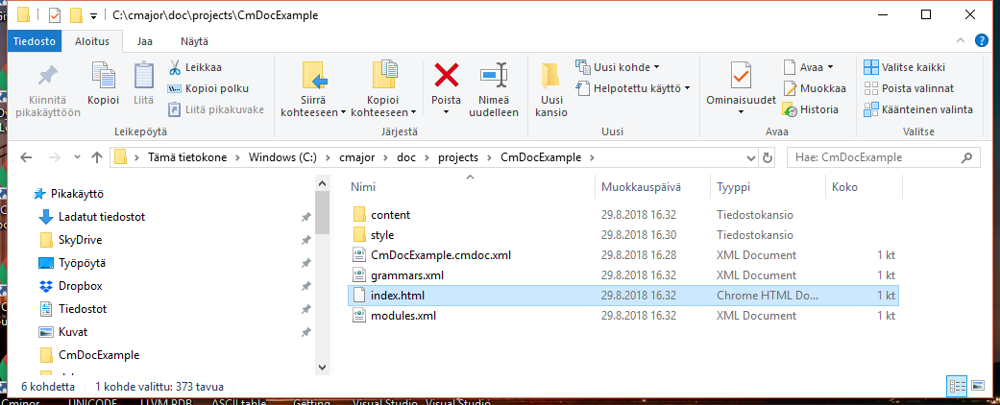The generated index.html looks now like this:
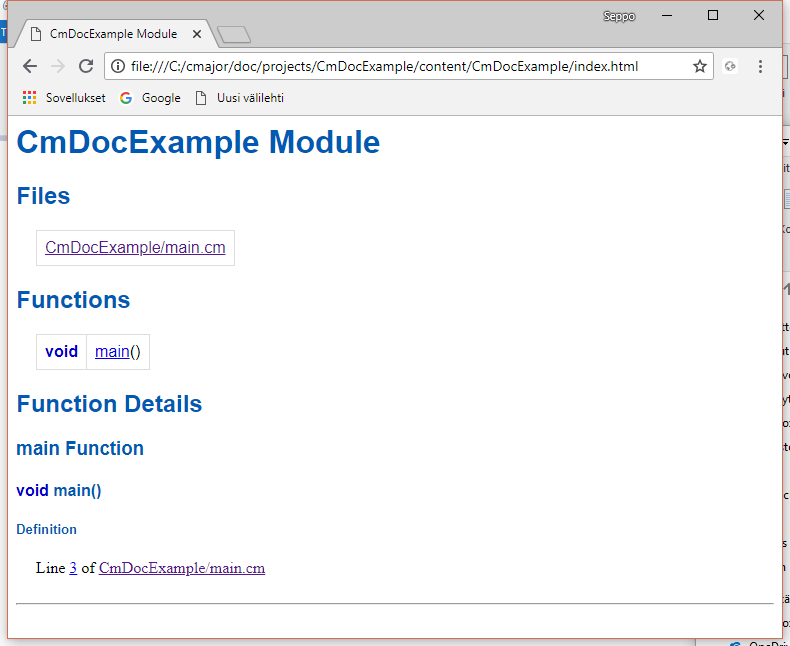Now create an XML file named docs.xml to the C:\cmajor\doc\projects\CmDocExample directory that will contain documentation for the example program:
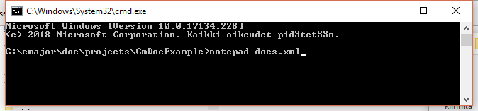Open the index.html and click the link for the CmDocExample module, then the link for the main() function and then copy the part of the address coming after the '#' from the address line to the clipboard:
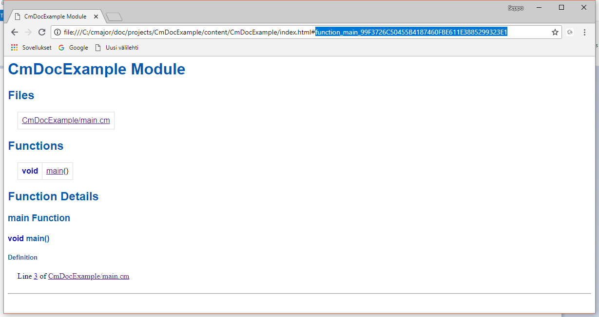Create a docs element to the docs.xml file and under it a doc element. Then create an id attribute for the doc element, and paste the id for the main function from the clipboard as the value of it. We have created three elements under the doc element: the desc element contains the description of the main function, and any possible details elements will contain detail paragraphs for it:
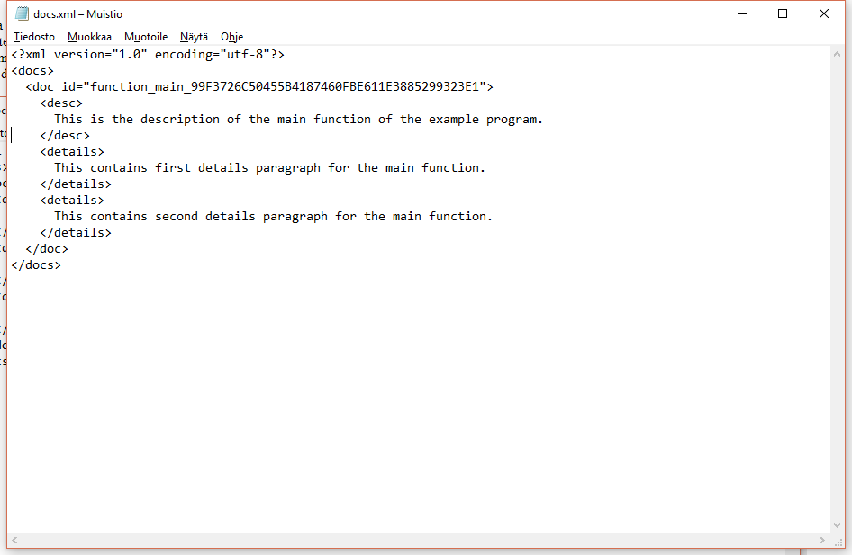Now edit the CmDocExample.cmdoc.xml file by adding a doc element with a filePath attribute with the value docs.xml.
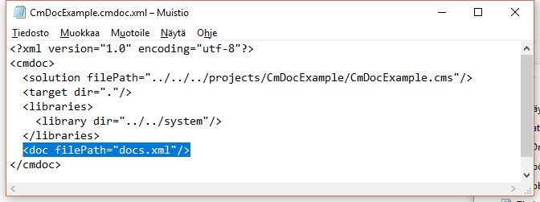Run the cmdoc command again:
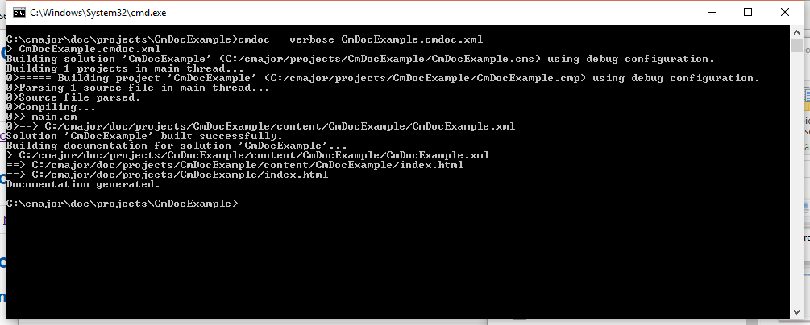Now view the index.html. The written documentation appears:
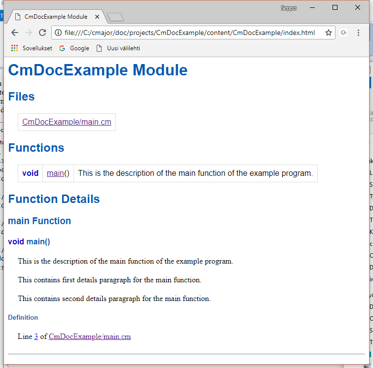The source code of CmDocExample/main.cm looks like this:
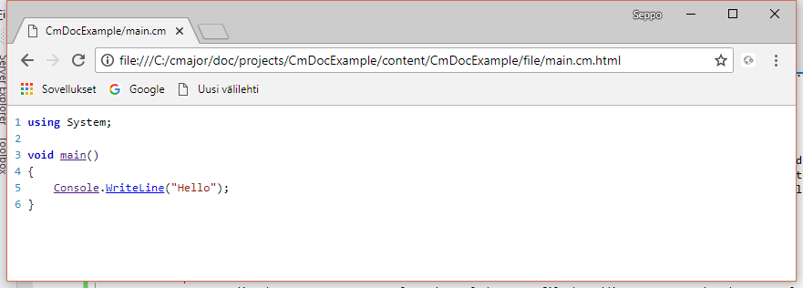If you click the Console link from the source code, the documentation for the Console class of the system library appears:
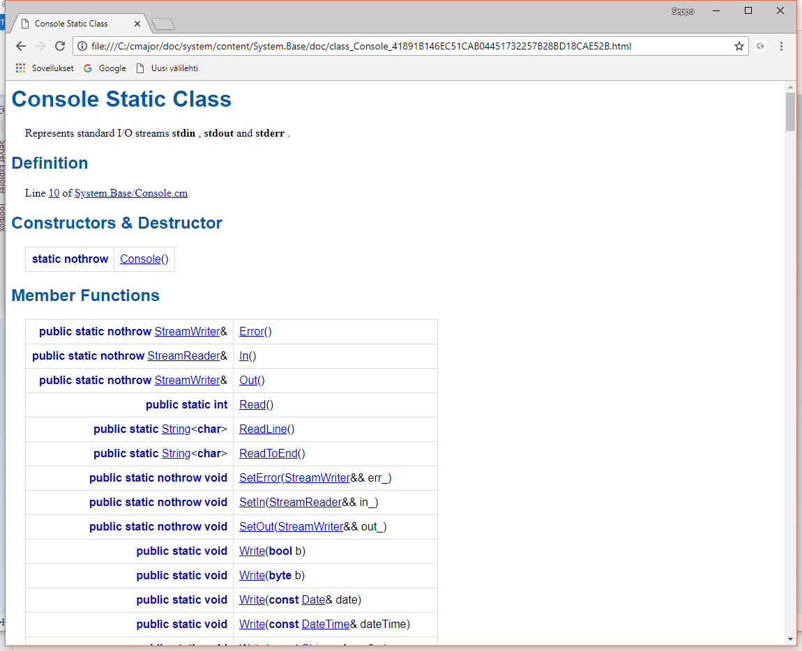That's the end of this tutorial.
The cmdoc program processes two XML files: an input XML file SOLUTION.cmdoc.xml and a documentation XML file (for example docs.xml).
The format of the SOLUTION.cmdoc.xml file, where SOLUTION is the solution to be documented is as follows:
<cmdoc>
<solution filePath="SOLUTION_FILE_PATH.cms"/>
<doc filePath="DOCUMENTATION_FILE_PATH.xml"/>
<target dir="TARGET_DIRECTORY_PATH"/>
<libraries>
<library dir="EXTERNAL_DIRECTORY_PATH"/>
<library dir="EXTERNAL_DIRECTORY_PATH"/>
...
</libraries>
</cmdoc>
where
The doc, libraries and library elements may be missing.
The format of the documentation file (for example docs.xml) that contains the documentation for a solution is as follows:
<docs>
<doc id="ID">
<desc>
DESCRIPTION
</desc>
<details>
DETAILS paragraph 1
</details>
<details>
DETAILS paragraph 2
</details>
...
</doc>
<doc id="ID">
<desc>
DESCRIPTION
</desc>
</doc>
...
</docs>
Each documented program entity has a single desc element that is obligatory. The desc contains the description text of an entity. The documented entity may have zero or more details elements that represent detail text paragraphs. Only a namespace, class, concept and enumeration may have details elements.
The ID is the documentation identifier of the program entity to be documented.
Each documented program entity has an URL. The URL of an entity can be found out by clicking a link of it in the documentation source code or in other generated documentation. The URL will be shown in the address line of the browser. When you got an URL of an entity, the ID of it can be derived from it as follows:
| entity | example URL | ID |
|---|---|---|
| namespace | .../ns_System.html | ns_System |
| class | .../class_Console_41891B146EC51CAB04451732257B28BD18CAE52B.html | class_Console_41891B146EC51CAB04451732257B28BD18CAE52B |
| concept | .../concept_Container_0A128B13B9494DFD21086D34DFB070EAA26D473A.html | concept_Container_0A128B13B9494DFD21086D34DFB070EAA26D473A |
| enumeration | .../enumerated_type_Month_7829D8A209CD9954EC457E7406A5269E99C4AA48.html | enumerated_type_Month_7829D8A209CD9954EC457E7406A5269E99C4AA48 |
| function | .../ns_System.html#function_Min_CBFBA4BF1C9AFF4708FC71F4031C929A1A8AE1FB | function_Min_CBFBA4BF1C9AFF4708FC71F4031C929A1A8AE1FB |
| typedef | .../ns_System.html#typedef_string_B6DB6B2DEFC437FBF697A2E84F7B7771FC1DDEE3 | typedef_string_B6DB6B2DEFC437FBF697A2E84F7B7771FC1DDEE3 |
| constant | .../ns_System.html#constant_insertionSortThreshold_56F85BEA8266D9529E96B6415FF32EC6B8AB62C5 | constant_insertionSortThreshold_56F85BEA8266D9529E96B6415FF32EC6B8AB62C5 |
| delegate | .../ns_System.Threading.html#delegate_ThreadStartFunction_56B97B5DFF5ED9F3C1C29C2C8655A9ED8753032F | delegate_ThreadStartFunction_56B97B5DFF5ED9F3C1C29C2C8655A9ED8753032F |
| class delegate | .../ns_System.Threading.html#class_delegate_ThreadStartMethod_3044EADA25CA797E0DE0095ECAC529EAFE935B55 | class_delegate_ThreadStartMethod_3044EADA25CA797E0DE0095ECAC529EAFE935B55 |
| enumeration constant | .../enumerated_type_CharClass_825BD0E92E069CC6BC59D5D117AD06076A653B4D.html#enumeration_constant_space_F27E532B5A11148A0B68171CCD38C1A2C0B6FBAD | enumeration_constant_space_F27E532B5A11148A0B68171CCD38C1A2C0B6FBAD |
DESCRIPTION and DETAILS texts can contain a <ref>ID</ref> elements, where ID is the documentation identifier of a program entity. Each ref element will be substituted by a HTML link to the documentation of referenced entity.
DESCRIPTION and DETAILS texts can also contain other HTML elements that are preserved in the generated documentation.
A details element may have a title attribute with a value that will become a section title in the generated documentation.
Usage: cmdoc [options] { INPUT_FILE.cmdoc.xml }
Generate documentation for a solution in input file INPUT_FILE.cmdoc.xml.
Options:
| Long option | Short option | Description |
|---|---|---|
| --verbose | -v | Be verbose. |
| --help | -h | Print help. |
| --optimize | -o | Do not compile the solution and generate documentation source code and symbol table XML files for those projects that are up-to-date. |
| --build-threads=N | -bt=N | Use N build threads. |